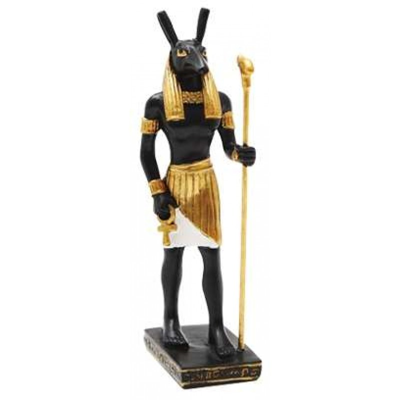

Isis is a goddess in Egyptian mythology. She was the sister and wife of Osiris, and
they had a son named Horus. As goddess of life and magic, Isis protected women
and children, and healed the sick. Closely linked to the throne, she was one of
the greatest goddesses of Ancient Egypt
hover To see the pic
Osiris
Osiris
Osiris was the Ancient Egyptian god of the dead, and the god of the resurrection
into eternal life; ruler, protector, and judge of the deceased. His cult originated in
Abydos, where tradition locates his tomb. Osiris was the first child of Nut and Geb,
and brother of Set, Nephthys, and Isis, who was also his wife
hover To see the pic

Seth
Seth
Set, also known as Seth and Suetekh, was the Egyptian god of war, chaos and
storms, brother of Osiris, Isis, and Horus the Elder, uncle to Horus the Younger, and
brother-husband to Nephthys. His other consort was the goddess Tawaret, a hippo-headed
deity who presided over fertility and childbirth
hover To see the pic
Horus
Horus
Horus was the important and ancient deity of Egyptian gods. His name Horus
means “The One Far Above” and commonly known as Heru or Har by the Greeks.
Horus was originally the Sky God, but he is also known as War God, Hunter's God, God of
Kingship and others. He played the role as the protector of the ruler of Egypt
hover To see the pic
Thoth
Thoth
Thoth is the Egyptian god of writing, magic, wisdom, and the moon.
He was one of the most important gods of ancient Egypt alternately said to be self-created or born of the seed of
hover To see the pic
Anubis
Anubis
Anubis was the god of embalming and the dead .Since jackals were often seen in cemeteries, the ancient Egyptians believed that
Anubis watched over the dead. Anubis was the god who helped to embalm Osiris
After he was killed by Seth. ... Priests often wore a mask of Anubis during mummification ceremonies.
hover To see the pic